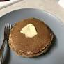

Pancakes please

Description
This is a fruity cinnamon fluffy pancake, cobbled together
from many different recipes found on the internet.
It's my favourite type of pancake, but my partner prefers crepes - sigh.
Ingredients
- 130ml milk
- 2 tbs sugar (preferably brown but I've found anything works)
- So many sultanas
- 2tbs oil
- 1 large egg
- 1 tsp vanilla extract
- 1 tbs cinnamon
- 1 tsp mixed spice
Steps
- Sift and combine the dry ingredients in a bowl
- In another bowl, gently beat the egg
- Add milk to the egg and whisk
- Add oil and vanilla to the egg mix, and whisk again
- Gradually add the wet ingredients to the dry, stirring as you go
- Once everything is mixed together, spoon a great big dollop onto a hot frying pan and fry for 7 mins, turning once halfway
- Enjoy!